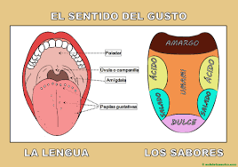

Alumno: Braulio Neftali Sandoval Reyes
Carnet:25-1250-2019
EL gusto
El gusto es uno de los cinco sentido mas esquisitos
Gracias a este podemos saborear cada
comida gracias a que se dividen en partes

Es importante cuidarlo de igual manera